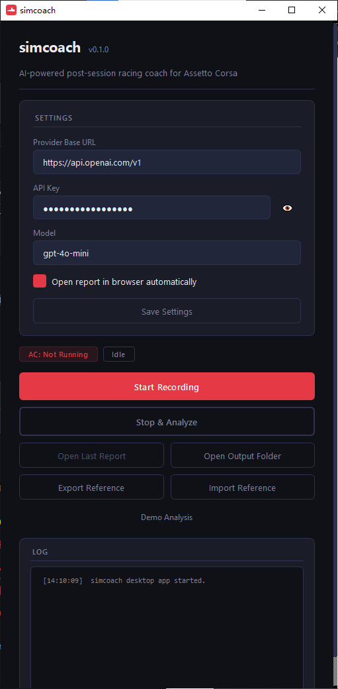
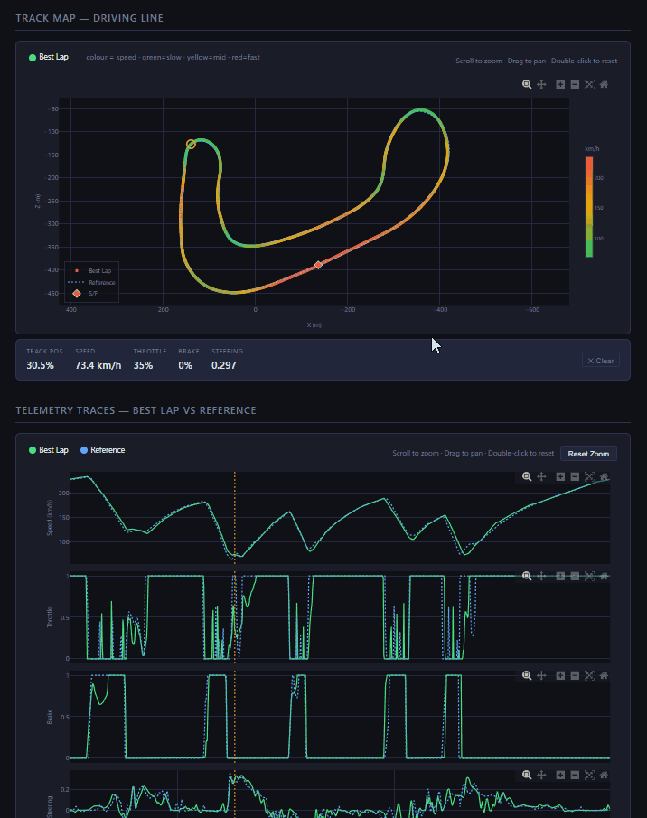

AI-powered post-session racing coach for Assetto Corsa. Record telemetry, compare laps, and get actionable coaching — all locally.


Structured analysis that turns raw telemetry into clear, actionable coaching.
Lap times are read directly from Assetto Corsa's shared memory — accurate and consistent with in-game timing.
Throttle, brake, speed, and steering traces linked to a live track map. Click any point to cross-reference position and data.
Click a corner in the AI coaching text and the charts and track map jump to that exact point — and vice versa.
Export your best laps as .simcoachref files. Share with friends or import others' reference laps to compare against.
Grab the latest .exe from GitHub Releases. No install required — just run it.
Enter your API key for any OpenAI-compatible provider — DeepSeek, GPT, Claude, or a local model.
Launch Assetto Corsa, hit Record, and drive. simcoach captures telemetry in real time via shared memory.
Click Analyze to generate an interactive HTML report with AI coaching, telemetry charts, and track map.
simcoach works with any provider that exposes an OpenAI-compatible chat endpoint.
DeepSeek, OpenAI (GPT), Anthropic (Claude via compatible proxy), and any local server (Ollama, LM Studio, etc.).
Set your base_url, api_key, and model in the GUI or config.yaml. That's it.
Some reasoning / "think" models work well; others may hit provider-specific limitations. Results may vary — experiment and find what works best for you.
Download simcoach, connect your favorite LLM, and start improving your lap times today.
Download for Windows